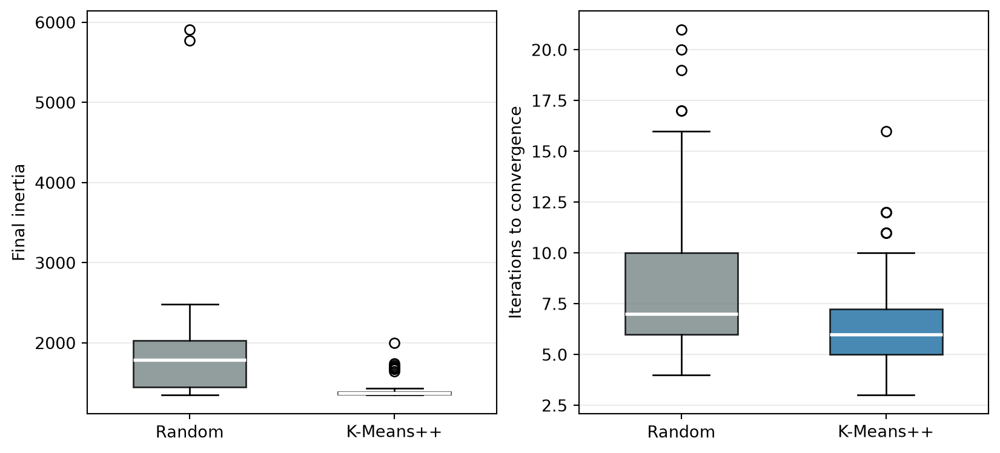

blob_centers = np.array([
[-2.5, -1.0],
[-0.5, 2.0],
[2.0, 1.5],
[2.5, -1.5]
])
X_blobs, _ = make_blobs(
n_samples=800,
centers=blob_centers,
cluster_std=[0.55, 0.70, 0.60, 0.50],
random_state=42
)
kmeans_demo = KMeans(
n_clusters=4,
n_init=10,
random_state=42
)
cluster_assignments = kmeans_demo.fit_predict(X_blobs)10 Chapter – Semi-Supervised Learning
10.1 Introduction
Supervised learning requires observations with known target labels. In many applications, collecting predictors is inexpensive while obtaining labels requires human judgment, laboratory tests, or expert review. A hospital may store many medical images but have diagnoses for only a small subset. A company may collect millions of documents while manually categorizing only a few hundred.
Semi-supervised learning studies how a small labeled set and a larger unlabeled set can be used together for a predictive task. We denote them by
\[ \mathcal{D}_L = \left\{(\mathbf{x}_i,y_i):i\in L\right\} \]
and
\[ \mathcal{D}_U = \left\{\mathbf{x}_i:i\in U\right\}, \]
where \(L\) and \(U\) are the indices of the labeled and unlabeled observations, respectively. Usually, \(L\) is much smaller than \(U\).
This chapter develops one concrete strategy. K-Means first organizes the training observations into clusters. A person labels one representative observation from each cluster, and those labels may then be assigned to other observations in the same cluster. This sequence separates two decisions:
- representative acquisition: deciding which observations a person should label;
- label propagation: assigning unverified labels to additional observations using the discovered clusters.
The unlabeled observations help only if the clusters are related to the target classes. If that relationship is weak, propagated labels can introduce errors and reduce predictive performance.
NoteLearning objectives
After completing this chapter, you should be able to:
- explain how K-Means assigns observations to centroids;
- compare random and K-Means++ initialization and explain the role of
n_init; - interpret inertia, the elbow method, and the silhouette coefficient;
- distinguish cluster identifiers, verified labels, and pseudo-labels;
- use K-Means to select representative observations for labeling;
- propagate labels within clusters and diagnose propagation errors;
- explain the tradeoff between pseudo-label coverage and reliability;
- evaluate a semi-supervised procedure without using the test set for model selection.
10.2 K-Means as a Structural Tool
K-Means is an unsupervised clustering algorithm. It uses only the predictors and partitions the observations into \(K\) groups. A cluster is a group discovered from predictor similarity; a class is a target category supplied by the problem. Cluster number 2, for example, does not automatically mean class 2.
10.2.1 Centroids and Assignments
Each cluster is summarized by a centroid, the coordinate-wise mean of the observations currently assigned to that cluster. Given \(K\) centroids, K-Means assigns every observation to its nearest centroid under Euclidean distance.
The algorithm alternates between two operations:
- Assign every observation to its nearest centroid.
- Replace every centroid with the mean of its assigned observations.
The assignments can change after the centroids move, so the two operations repeat until the assignments stabilize or the centroid movement becomes sufficiently small.
fit_predict() fits K-Means and returns one cluster identifier for each observation. After fitting, cluster_centers_ contains the centroid coordinates and labels_ contains the same assignments returned by fit_predict().
Every location in the predictor space can also be assigned to its nearest centroid. The resulting regions are called Voronoi regions. A boundary between two regions contains locations that are equally close to the corresponding centroids.
Show code
x_min, x_max = X_blobs[:, 0].min() - 0.5, X_blobs[:, 0].max() + 0.5
y_min, y_max = X_blobs[:, 1].min() - 0.5, X_blobs[:, 1].max() + 0.5
xx, yy = np.meshgrid(
np.linspace(x_min, x_max, 350),
np.linspace(y_min, y_max, 350)
)
region_labels = kmeans_demo.predict(np.c_[xx.ravel(), yy.ravel()])
region_labels = region_labels.reshape(xx.shape)
fig, axes = plt.subplots(1, 2, figsize=(11, 4.5), sharex=True, sharey=True)
axes[0].scatter(X_blobs[:, 0], X_blobs[:, 1], s=10, color="#566573")
axes[0].set_title("Unlabeled observations")
axes[1].contourf(xx, yy, region_labels, cmap="Pastel2", alpha=0.8)
axes[1].contour(xx, yy, region_labels, colors="white", linewidths=1)
axes[1].scatter(
X_blobs[:, 0],
X_blobs[:, 1],
c=cluster_assignments,
cmap="tab10",
s=10
)
axes[1].scatter(
kmeans_demo.cluster_centers_[:, 0],
kmeans_demo.cluster_centers_[:, 1],
marker="X",
s=180,
color="black",
edgecolor="white"
)
axes[1].set_title("Clusters and nearest-centroid regions")
for ax in axes:
ax.set_xlabel("Feature 1")
ax.set_ylabel("Feature 2")
plt.show()
10.2.2 Inertia
K-Means needs a numerical criterion for comparing different centroid locations. For each observation, it computes the distance to its assigned centroid, squares that distance, and then adds the squared distances across all observations. This sum is called inertia.
If \(c(i)\) is the cluster assigned to observation \(i\) and \(\boldsymbol{\mu}_{c(i)}\) is that cluster’s centroid, the inertia is
\[ J = \sum_{i=1}^{n} \left\| \mathbf{x}_i-\boldsymbol{\mu}_{c(i)} \right\|_2^2. \]
The quantity \(\|\mathbf{x}_i-\boldsymbol{\mu}_{c(i)}\|_2\) is the Euclidean distance from observation \(i\) to its centroid. Squaring gives greater weight to distant observations. A lower inertia therefore indicates that observations are, collectively, closer to their assigned centroids.
In Scikit-Learn, the final value is available as inertia_:
pd.Series({
"Number of observations": len(X_blobs),
"Number of clusters": kmeans_demo.n_clusters,
"Inertia": kmeans_demo.inertia_
}).round(3)Number of observations 800.000
Number of clusters 4.000
Inertia 533.379
dtype: float64Low inertia does not imply that the clusters match the target classes. K-Means never sees those classes. Inertia only measures compactness around the centroids.
10.2.3 Initialization and Convergence
The final clustering can depend on the initial centroid locations. K-Means reduces inertia during its assignment and update steps, but it can stop at a local optimum: a solution that cannot be improved by the next K-Means step even though another initialization could produce lower inertia.
With random initialization, K-Means selects \(K\) observations uniformly as its initial centroids. Several selected observations can come from the same dense region, leaving another region without a nearby starting centroid. The assignment and update steps may correct that configuration, but they may also converge to a poor local optimum.
K-Means++ spreads the initial centroids more deliberately (Arthur and Vassilvitskii 2007). It selects the first centroid uniformly from the observations. For every subsequent selection, let \(D(\textbf{x})\) be the distance from observation \(\textbf{x}\) to its nearest centroid already selected. The original K-Means++ procedure samples the next centroid with probability
\[ P(\textbf{x}\text{ is selected}) = \frac{D(\textbf{x})^2} {\sum_{j=1}^{n}D(\textbf{x}_j)^2}. \]
Observations far from the existing centroids are therefore more likely to be selected, although the result remains stochastic. Scikit-Learn uses a greedy K-Means++ variant that evaluates several candidates at each selection and retains the best candidate. This generally provides a better starting configuration and faster convergence, but it does not guarantee the global minimum.
The following experiment isolates the effect of initialization. It uses the same synthetic observations and the same 100 random seeds for both methods. Each fit has n_init=1; allowing several restarts here would combine the effect of the initialization rule with the benefit of repeated attempts.
X_initialization, _ = make_blobs(
n_samples=1_000,
centers=8,
cluster_std=[1.20, 0.50, 0.70, 1.30, 0.60, 0.90, 1.10, 0.55],
random_state=42
)
initialization_records = []
for seed in range(100):
for method in ["random", "k-means++"]:
fitted_kmeans = KMeans(
n_clusters=8,
init=method,
n_init=1,
random_state=seed
).fit(X_initialization)
initialization_records.append({
"Seed": seed,
"Initialization": method,
"Final inertia": fitted_kmeans.inertia_,
"Iterations": fitted_kmeans.n_iter_
})
initialization_results = pd.DataFrame(initialization_records)initialization_summary = (
initialization_results
.groupby("Initialization", sort=False)
.agg(
median_inertia=("Final inertia", "median"),
inertia_q1=("Final inertia", lambda values: values.quantile(0.25)),
inertia_q3=("Final inertia", lambda values: values.quantile(0.75)),
worst_inertia=("Final inertia", "max"),
mean_iterations=("Iterations", "mean")
)
.rename(columns={
"median_inertia": "Median inertia",
"inertia_q1": "Inertia Q1",
"inertia_q3": "Inertia Q3",
"worst_inertia": "Worst inertia",
"mean_iterations": "Mean iterations"
})
)
initialization_summary.round(1)| Median inertia | Inertia Q1 | Inertia Q3 | Worst inertia | Mean iterations | |
|---|---|---|---|---|---|
| Initialization | |||||
| random | 1790.2 | 1452.3 | 2031.6 | 5911.3 | 8.5 |
| k-means++ | 1370.7 | 1357.2 | 1389.1 | 1996.7 | 6.6 |
Show code
initialization_order = ["random", "k-means++"]
method_colors = ["#7F8C8D", "#2874A6"]
fig, axes = plt.subplots(1, 2, figsize=(10, 4.5))
for ax, column, ylabel in [
(axes[0], "Final inertia", "Final inertia"),
(axes[1], "Iterations", "Iterations to convergence")
]:
values_by_method = [
initialization_results.loc[
initialization_results["Initialization"] == method,
column
]
for method in initialization_order
]
boxes = ax.boxplot(
values_by_method,
tick_labels=["Random", "K-Means++"],
patch_artist=True,
widths=0.55,
medianprops={"color": "white", "linewidth": 2}
)
for box, color in zip(boxes["boxes"], method_colors):
box.set_facecolor(color)
box.set_alpha(0.85)
ax.set_ylabel(ylabel)
ax.grid(axis="y", alpha=0.25)
plt.show()
In this simulation, K-Means++ has a lower and tighter distribution of final inertia and needs fewer iterations on average. The paired runs do not imply that K-Means++ must beat random initialization for every seed or dataset. They show that initialization changes both solution quality and computational effort.
The init parameter controls how one run begins, whereas n_init controls how many complete runs are fitted. Scikit-Learn retains the run with the lowest final inertia. The main examples in this chapter use K-Means++ and set n_init=10 explicitly, combining informed initialization with several opportunities to avoid a poor local optimum.
10.2.4 Choosing the Number of Clusters
Increasing \(K\) gives the algorithm more centroids, so inertia cannot increase and usually decreases. Consequently, choosing the \(K\) with the smallest inertia would eventually favor one cluster per observation. The elbow method instead looks for a point after which additional clusters provide much smaller reductions in inertia.
The silhouette coefficient combines compactness and separation. For observation \(i\):
- \(a_i\) is its mean distance to the other observations in its own cluster;
- for every alternative cluster, compute its mean distance to the observations in that cluster;
- \(b_i\) is the smallest of those alternative mean distances.
The coefficient is
\[ s_i = \frac{b_i-a_i}{\max(a_i,b_i)}. \]
It ranges from \(-1\) to \(1\). Values near \(1\) indicate that an observation is much closer to its own cluster than to alternatives. Values near \(0\) indicate a boundary observation, and negative values suggest that another cluster may be more appropriate. silhouette_score() averages \(s_i\) over all observations.
candidate_clusters = range(2, 10)
inertias = []
silhouette_scores = []
for n_clusters in candidate_clusters:
candidate_kmeans = KMeans(
n_clusters=n_clusters,
n_init=10,
random_state=42
)
candidate_labels = candidate_kmeans.fit_predict(X_blobs)
inertias.append(candidate_kmeans.inertia_)
silhouette_scores.append(
silhouette_score(X_blobs, candidate_labels)
)Show code
fig, axes = plt.subplots(1, 2, figsize=(10, 4.5))
axes[0].plot(candidate_clusters, inertias, marker="o")
axes[0].set_xlabel("Number of clusters")
axes[0].set_ylabel("Inertia")
axes[0].set_title("Elbow method")
axes[1].plot(candidate_clusters, silhouette_scores, marker="o")
axes[1].set_xlabel("Number of clusters")
axes[1].set_ylabel("Mean silhouette score")
axes[1].set_title("Silhouette analysis")
plt.show()
These metrics evaluate geometric clusters, not target classes. In representative labeling, \(K\) may instead be determined by the number of observations that can be labeled. It can also be useful to create more clusters than target classes so that different forms of the same class receive separate representatives.
K-Means is most appropriate for approximately compact groups that can be summarized by centroids under Euclidean distance. It is sensitive to feature scale, outliers, unequal cluster sizes, and nonconvex shapes. These limitations also affect labels propagated through its clusters.
10.3 When Can Clusters Help Classification?
The unlabeled observations reveal where predictor values are concentrated. Informally, a high-density region is an area containing many observations in a relatively small amount of space. A low-density region contains few observations and may separate visible concentrations.
Cluster-based semi-supervised learning relies on the cluster assumption: observations grouped in the same concentrated region are likely to share a target class. Under this assumption, one verified label may provide useful information about nearby observations in the same cluster.
The assumption can fail. A cluster may contain several classes, a single class may be divided across several clusters, or Euclidean distance may not reflect meaningful similarity. For handwritten digits, for example, visually different digits can have similar pixel values, while two writing styles of the same digit can be far apart.
The cluster assumption should therefore be treated as a hypothesis about the data, not as a fact guaranteed by K-Means.
10.4 Experimental Design with Digits
The remaining sections use Scikit-Learn’s Digits dataset. It contains \(1{,}797\) grayscale images of handwritten digits. Every image has \(8\times8=64\) pixel-intensity features and a class label from \(0\) to \(9\).
The true labels are available because this is a controlled educational simulation. Most training labels will be hidden temporarily. Hidden labels may be used afterward to explain how well pseudo-labeling worked, but they must not be supplied to the semi-supervised procedure or used to tune it.
X_digits, y_digits = load_digits(return_X_y=True)
# Pixel intensities have a known range from 0 to 16.
X_digits = X_digits / 16.0
X_digits_train, X_digits_test, y_digits_train, y_digits_test = (
train_test_split(
X_digits,
y_digits,
test_size=0.25,
stratify=y_digits,
random_state=42
)
)The test set is separated before clustering, representative selection, or pseudo-labeling. Only the training predictors may be used to discover clusters. The test set remains untouched until the procedures and their settings have been fixed.
10.4.1 A Controlled Labeling Budget
We simulate a budget of \(50\) verified labels, five from each digit class. StratifiedShuffleSplit returns indices for a subset that preserves the class proportions. It uses the hidden labels here only to make the educational comparison stable and to ensure that every class is represented. A real labeling process cannot stratify observations whose labels are unknown.
n_labeled = 50
label_splitter = StratifiedShuffleSplit(
n_splits=1,
train_size=n_labeled,
random_state=42
)
labeled_indices, _ = next(
label_splitter.split(X_digits_train, y_digits_train)
)10.4.2 Supervised References
The first reference classifier uses only the \(50\) available labels. It answers a necessary question: how well can the existing supervised method perform without using the unlabeled observations?
A second reference uses all training labels. It provides context for this simulation, but it is not a fair competitor because it consumes many more verified labels. It should not be interpreted as a guaranteed mathematical upper bound.
def make_digits_classifier():
return LogisticRegression(
max_iter=5_000,
random_state=42
)
low_label_classifier = make_digits_classifier()
low_label_classifier.fit(
X_digits_train[labeled_indices],
y_digits_train[labeled_indices]
)
fully_supervised_classifier = make_digits_classifier()
fully_supervised_classifier.fit(X_digits_train, y_digits_train)LogisticRegression(max_iter=5000, random_state=42)In a Jupyter environment, please rerun this cell to show the HTML representation or trust the notebook.
On GitHub, the HTML representation is unable to render, please try loading this page with nbviewer.org.
LogisticRegression(max_iter=5000, random_state=42)
The models have been fitted, but their test results are intentionally postponed. The remaining procedures will be defined before the test set is evaluated.
10.5 Selecting Representative Observations
A small random labeled sample may contain redundant observations. K-Means offers a simple alternative: partition the training pool into as many clusters as the labeling budget and select the real observation nearest to each centroid.
The centroid itself is an average and may not correspond to an actual image. The selected representative observation is the training image closest to that centroid. An oracle is the external source that supplies its verified label, such as a human annotator or laboratory test.
n_digit_clusters = n_labeled
digits_kmeans = KMeans(
n_clusters=n_digit_clusters,
n_init=10,
random_state=42
)
digit_cluster_distances = digits_kmeans.fit_transform(X_digits_train)
representative_indices = np.argmin(digit_cluster_distances, axis=0)
X_representative_digits = X_digits_train[representative_indices]
# Hidden labels simulate the answers returned by a perfect oracle.
y_representative_digits = y_digits_train[representative_indices]fit_transform() returns a matrix with one row per training observation and one column per centroid. Entry \((i,k)\) is the distance from observation \(i\) to centroid \(k\). Taking argmin(..., axis=0) finds the row with the smallest distance in every centroid column, producing one representative index per cluster.
pd.Series({
"Training observations": digit_cluster_distances.shape[0],
"Centroid columns": digit_cluster_distances.shape[1],
"Selected representatives": len(representative_indices),
"Digit classes represented": len(np.unique(y_representative_digits))
})Training observations 1347
Centroid columns 50
Selected representatives 50
Digit classes represented 10
dtype: int64Show code
fig, axes = plt.subplots(5, 10, figsize=(10, 5))
for index, ax in enumerate(axes.ravel()):
ax.imshow(
X_representative_digits[index].reshape(8, 8),
cmap="binary"
)
ax.set_title(str(y_representative_digits[index]), fontsize=9)
ax.axis("off")
plt.tight_layout()
plt.show()
The labels shown above come from the simulated oracle, not from K-Means. Training only on these representatives measures the effect of changing the acquisition policy while keeping the same budget of 50 verified labels.
representative_classifier = make_digits_classifier()
representative_classifier.fit(
X_representative_digits,
y_representative_digits
)LogisticRegression(max_iter=5000, random_state=42)In a Jupyter environment, please rerun this cell to show the HTML representation or trust the notebook.
On GitHub, the HTML representation is unable to render, please try loading this page with nbviewer.org.
LogisticRegression(max_iter=5000, random_state=42)
Representative acquisition can cover the predictor space better than one small random sample, but it does not guarantee class balance. It can select unusual or ambiguous observations because geometric centrality is not the same as class typicality.
10.6 Propagating Labels Within Clusters
After the representative of every cluster has been verified, its class label can be assigned to the other observations in that cluster. This chapter calls that procedure cluster propagation.
If \(c(i)\) is the cluster assigned to observation \(i\), and \(r_k\) is the verified representative of cluster \(k\), the propagated label is
\[ \widetilde{y}_i = y_{r_{c(i)}}. \]
This rule assumes exactly one verified representative for every cluster. The values \(\widetilde{y}_i\) assigned to previously unlabeled observations are pseudo-labels. They are inferred labels, not verified ground truth. If the representative does not describe the entire cluster, one error can be copied to many observations.
y_cluster_propagated = np.empty(len(X_digits_train), dtype=int)
for cluster_id in range(n_digit_clusters):
in_cluster = digits_kmeans.labels_ == cluster_id
y_cluster_propagated[in_cluster] = y_representative_digits[cluster_id]
cluster_propagation_classifier = make_digits_classifier()
cluster_propagation_classifier.fit(
X_digits_train,
y_cluster_propagated
)LogisticRegression(max_iter=5000, random_state=42)In a Jupyter environment, please rerun this cell to show the HTML representation or trust the notebook.
On GitHub, the HTML representation is unable to render, please try loading this page with nbviewer.org.
LogisticRegression(max_iter=5000, random_state=42)
10.6.1 Diagnosing Propagation in a Simulation
In this simulation, the hidden training labels let us inspect the pseudo-labels after fitting. The following diagnostics would not be available for a genuinely unlabeled pool.
We define pseudo-label accuracy over the observations that were not part of the controlled 50-label baseline:
\[ \text{pseudo-label accuracy} = \frac{\text{correct pseudo-labels in }U} {\text{pseudo-labeled observations in }U}. \]
is_control_labeled = np.zeros(len(X_digits_train), dtype=bool)
is_control_labeled[labeled_indices] = True
is_control_unlabeled = ~is_control_labeled
cluster_pseudo_label_accuracy = accuracy_score(
y_digits_train[is_control_unlabeled],
y_cluster_propagated[is_control_unlabeled]
)
pd.Series({
"Pseudo-labeled observations": is_control_unlabeled.sum(),
"Pseudo-label accuracy": cluster_pseudo_label_accuracy
}).round(3)Pseudo-labeled observations 1297.000
Pseudo-label accuracy 0.927
dtype: float64This diagnostic uses the same unlabeled evaluation mask for the propagation procedures below. That keeps the meaning of pseudo-label accuracy consistent.
10.6.2 Cluster Purity
Cluster propagation works best when clusters contain observations from one target class. In a simulation, cluster purity measures the fraction belonging to the most frequent true class:
\[ \operatorname{purity}(C_k) = \frac{ \max_c\left|\{i\in C_k:y_i=c\}\right| }{|C_k|}. \]
Purity is a diagnostic, not a training input. It requires the labels that are supposed to be hidden and therefore cannot be computed for a genuinely unlabeled pool.
cluster_diagnostics = []
for cluster_id in range(n_digit_clusters):
in_cluster = digits_kmeans.labels_ == cluster_id
true_cluster_labels = y_digits_train[in_cluster]
label_counts = np.bincount(true_cluster_labels, minlength=10)
cluster_diagnostics.append({
"Cluster": cluster_id,
"Size": in_cluster.sum(),
"Purity": label_counts.max() / in_cluster.sum(),
"Representative label": y_representative_digits[cluster_id],
"Majority label": label_counts.argmax()
})
cluster_diagnostics = pd.DataFrame(cluster_diagnostics)
cluster_diagnostics.sort_values("Purity").head(10).round(3)| Cluster | Size | Purity | Representative label | Majority label | |
|---|---|---|---|---|---|
| 42 | 42 | 17 | 0.471 | 7 | 7 |
| 10 | 10 | 23 | 0.565 | 3 | 9 |
| 32 | 32 | 34 | 0.618 | 3 | 3 |
| 15 | 15 | 35 | 0.657 | 8 | 8 |
| 41 | 41 | 21 | 0.667 | 8 | 8 |
| 19 | 19 | 26 | 0.769 | 9 | 9 |
| 1 | 1 | 18 | 0.778 | 1 | 1 |
| 23 | 23 | 27 | 0.815 | 8 | 8 |
| 45 | 45 | 22 | 0.864 | 1 | 1 |
| 12 | 12 | 22 | 0.864 | 5 | 5 |
Low-purity clusters reveal a failure of the cluster assumption. Purity also tends to increase when many small clusters are created, so it must not be used alone to choose \(K\).
10.7 Conservative Propagation by Distance
Full propagation labels every observation in a cluster, including observations near cluster boundaries or far from the centroid. A more conservative policy retains only the observations closest to their assigned centroid.
For observation \(i\), the relevant distance is
\[ d_i = \left\| \mathbf{x}_i-\boldsymbol{\mu}_{c(i)} \right\|_2. \]
Within each cluster, a percentile determines which distances are retained. Retaining the 80th percentile, for example, keeps approximately the closest 80% of each cluster. Ties and cluster sizes can make the overall fraction differ slightly from 80%.
Coverage is the fraction of the initially unlabeled pool that receives and retains a pseudo-label:
\[ \text{coverage} = \frac{\text{retained pseudo-labels in }U}{|U|}. \]
assigned_cluster_distances = digit_cluster_distances[
np.arange(len(X_digits_train)),
digits_kmeans.labels_
]
def closest_cluster_mask(percentile):
keep = np.zeros(len(X_digits_train), dtype=bool)
for cluster_id in range(n_digit_clusters):
in_cluster = digits_kmeans.labels_ == cluster_id
cutoff = np.percentile(
assigned_cluster_distances[in_cluster],
percentile
)
keep[in_cluster] = (
assigned_cluster_distances[in_cluster] <= cutoff
)
# Verified representative labels should never be discarded.
keep[representative_indices] = True
return keep
propagation_percentiles = [20, 40, 60, 80, 100]
propagation_diagnostics = []
for percentile in propagation_percentiles:
retained = closest_cluster_mask(percentile)
retained_unlabeled = retained & is_control_unlabeled
propagation_diagnostics.append({
"Percentile retained within each cluster": percentile,
"Coverage": (
retained_unlabeled.sum() / is_control_unlabeled.sum()
),
"Pseudo-label accuracy": accuracy_score(
y_digits_train[retained_unlabeled],
y_cluster_propagated[retained_unlabeled]
)
})
propagation_diagnostics = pd.DataFrame(propagation_diagnostics)
propagation_diagnostics.round(3)| Percentile retained within each cluster | Coverage | Pseudo-label accuracy | |
|---|---|---|---|
| 0 | 20 | 0.214 | 0.971 |
| 1 | 40 | 0.405 | 0.962 |
| 2 | 60 | 0.596 | 0.957 |
| 3 | 80 | 0.789 | 0.949 |
| 4 | 100 | 1.000 | 0.927 |
Show code
fig, ax = plt.subplots(figsize=(8, 4.5))
ax.plot(
propagation_diagnostics["Coverage"],
propagation_diagnostics["Pseudo-label accuracy"],
marker="o",
linewidth=2
)
for _, row in propagation_diagnostics.iterrows():
ax.annotate(
f'{int(row["Percentile retained within each cluster"])}%',
(row["Coverage"], row["Pseudo-label accuracy"]),
xytext=(5, 5),
textcoords="offset points"
)
ax.set_xlabel("Pseudo-label coverage on the unlabeled pool")
ax.set_ylabel("Pseudo-label accuracy on retained observations")
ax.set_ylim(0.75, 1.01)
plt.show()
The graph uses hidden labels only to explain the behavior of the simulation. In a real application, it cannot be used to select the percentile because pseudo-label accuracy is unknown. A percentile must be selected with a separate validation protocol using verified labels.
For the final demonstration, the 80th percentile is fixed as an illustrative policy before any test result is computed.
chosen_propagation_percentile = 80
partially_propagated = closest_cluster_mask(
chosen_propagation_percentile
)
filtered_propagation_classifier = make_digits_classifier()
filtered_propagation_classifier.fit(
X_digits_train[partially_propagated],
y_cluster_propagated[partially_propagated]
)LogisticRegression(max_iter=5000, random_state=42)In a Jupyter environment, please rerun this cell to show the HTML representation or trust the notebook.
On GitHub, the HTML representation is unable to render, please try loading this page with nbviewer.org.
LogisticRegression(max_iter=5000, random_state=42)
Distance to a centroid is not a calibrated probability that a label is correct. Filtering can help, have little effect, or remove useful observations.
10.8 Final Evaluation
All procedures and the illustrative percentile have now been fixed. We evaluate the test set once and collect the results in a single table.
evaluation_models = {
"Controlled 50-label baseline": low_label_classifier,
"K-Means representatives": representative_classifier,
"Full cluster propagation": cluster_propagation_classifier,
"Filtered cluster propagation": filtered_propagation_classifier,
"Fully supervised reference": fully_supervised_classifier
}
test_accuracies = {
name: model.score(X_digits_test, y_digits_test)
for name, model in evaluation_models.items()
}
semi_supervised_results = pd.DataFrame({
"Verified labels": [
n_labeled,
n_labeled,
n_labeled,
n_labeled,
len(X_digits_train)
],
"Uses pseudo-labels": [False, False, True, True, False],
"Test accuracy": list(test_accuracies.values())
}, index=evaluation_models.keys())
semi_supervised_results.round(3)| Verified labels | Uses pseudo-labels | Test accuracy | |
|---|---|---|---|
| Controlled 50-label baseline | 50 | False | 0.840 |
| K-Means representatives | 50 | False | 0.891 |
| Full cluster propagation | 50 | True | 0.911 |
| Filtered cluster propagation | 50 | True | 0.907 |
| Fully supervised reference | 1347 | False | 0.962 |
Show code
plot_results = semi_supervised_results.sort_values("Test accuracy")
bar_colors = np.where(
plot_results["Verified labels"] > n_labeled,
"#7F8C8D",
"#2874A6"
)
fig, ax = plt.subplots(figsize=(9, 5))
bars = ax.barh(
plot_results.index,
plot_results["Test accuracy"],
color=bar_colors
)
ax.bar_label(bars, fmt="%.3f", padding=4)
ax.set_xlabel("Test accuracy")
ax.set_xlim(0.70, 1.00)
plt.show()
The first two rows compare different ways of acquiring the same number of verified labels. Their difference must not be attributed to pseudo-labeling because neither method uses pseudo-labels. The next two rows add cluster propagation after representative acquisition. The fully supervised model is contextual evidence obtained with a much larger labeling budget, not a fair semi-supervised competitor.
One test evaluation cannot establish that a procedure is universally better. Results can change when the 50 labeled observations, the K-Means initialization, or the data split changes. A formal comparison should repeat every procedure over matched label draws and report the distribution of their differences.
10.9 Evaluation Guidelines
A responsible cluster-based semi-supervised experiment should follow these steps:
- Define the target population and the budget of verified labels.
- Separate the final test set before discovering clusters.
- Establish a supervised baseline using only the available labels.
- Fit K-Means and all learned preprocessing using training predictors only.
- Keep acquisition effects separate from propagation effects.
- Select \(K\), distance percentiles, and other settings without consulting the final test set.
- Define pseudo-label accuracy and coverage on the initially unlabeled pool.
- Use hidden labels only for retrospective simulation diagnostics, never as deployable inputs.
- Repeat all compared procedures over the same label draws and random seeds.
- Retain the supervised baseline when unlabeled data do not provide a validated improvement.
10.9.1 Common Mistakes
WarningTreating cluster identifiers as class labels
Cluster numbers are arbitrary. A target class can occupy several clusters, and one cluster can contain several classes.
WarningBuilding clusters with the test set
Using test predictors to fit K-Means leaks information into an evaluation intended to measure performance on unseen observations.
WarningTreating pseudo-labels as verified truth
Pseudo-labels are uncertain assignments. Training on them can amplify the error of one incorrectly labeled representative.
WarningTuning with hidden labels
Hidden labels can explain a controlled simulation, but a real procedure cannot use them to choose \(K\), filtering percentiles, or representatives.
WarningAssuming unlabeled observations must help
The procedure depends on the cluster assumption. When clusters do not align with classes, using pseudo-labels may perform worse than the supervised baseline.
10.10 Limitations
K-Means measures similarity with Euclidean distance and represents each cluster by a centroid. This works best for compact, similarly scaled groups. It may be inappropriate for curved structures, strongly unequal cluster sizes, many outliers, or predictor spaces in which Euclidean distance has little semantic meaning.
The Digits experiment also assumes a perfect oracle and uses hidden labels to create a balanced educational baseline. Real annotation can be noisy, expensive, delayed, and unable to guarantee that every class appears in a small budget.
Finally, selecting one representative per cluster is a single-round acquisition heuristic. More advanced semi-supervised and active-learning methods exist, but they require additional concepts and are outside the scope of this chapter.
10.11 Chapter Summary
- Semi-supervised learning combines a small verified labeled set with a larger unlabeled pool for a predictive task.
- K-Means alternates between nearest-centroid assignment and centroid updates.
- K-Means++ spreads initial centroids using squared-distance sampling;
n_initrepeats the complete fit and retains the solution with the lowest inertia. - Inertia is the sum of squared distances to assigned centroids; it measures compactness, not agreement with target classes.
- Elbow and silhouette analyses describe geometric clustering and do not guarantee class alignment.
- Representative acquisition selects real observations near centroids for an oracle to label.
- Cluster propagation assigns each representative label to other observations in its cluster, creating pseudo-labels.
- The cluster assumption can fail, allowing one representative error to contaminate many observations.
- Distance filtering trades pseudo-label coverage for possible reliability but does not provide calibrated confidence.
- Acquisition and propagation effects must be reported separately.
- The test set must remain isolated until all procedures and settings have been fixed.
- A supervised low-label baseline remains essential because unlabeled data do not guarantee improvement.
10.12 Exercises
- Fit K-Means to the synthetic blobs with
init="random"andinit="k-means++"using matched values ofrandom_stateandn_init=1. Then increasen_initfor both methods and explain how repeated starts change their inertia distributions and cluster assignments. - Repeat the elbow and silhouette analyses after increasing one blob’s standard deviation. Explain why the preferred \(K\) may become less clear.
- Repeat the Digits experiment with labeling budgets of 20, 50, 100, and 200. Keep acquisition and propagation results separate.
- Compare a simple random acquisition policy with K-Means representative acquisition over at least five matched random seeds.
- Plot cluster purity against cluster size. Inspect images from the least pure clusters and describe the visual ambiguities.
- Compare full propagation with several distance percentiles. Design a validation procedure that does not use the final test labels to choose the percentile.
- Report pseudo-label coverage and accuracy separately for every digit class in this simulation.
- Add noise to a fraction of the representative labels and measure how many pseudo-labels each incorrect representative affects.
- Standardize the pixel features instead of dividing by 16. Explain how changing feature scale affects distances, clusters, and representatives.
- Design an evaluation for a real application in which the labels of the unlabeled pool are never available, including the oracle, labeling budget, validation set, and final test set.